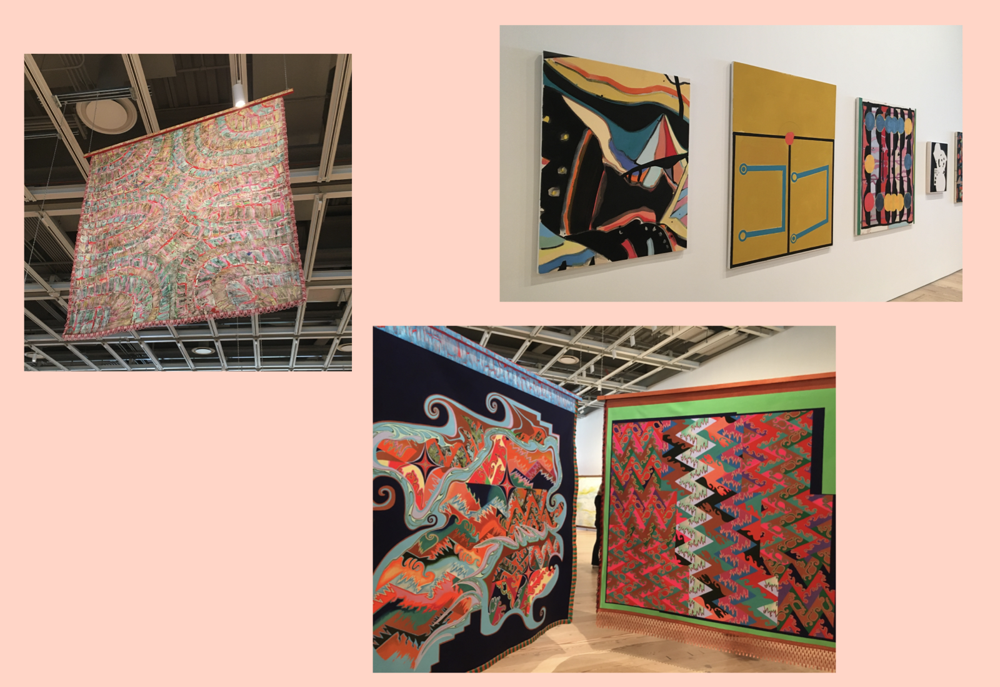
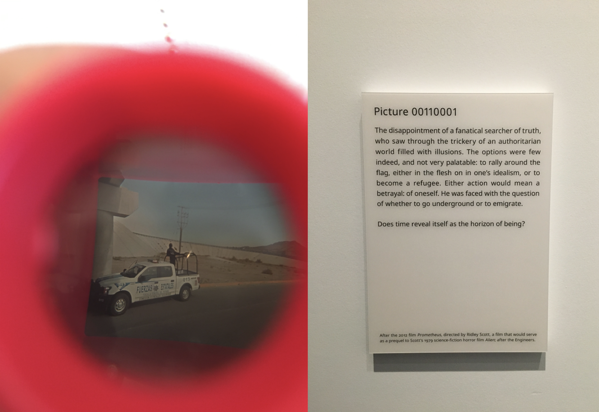
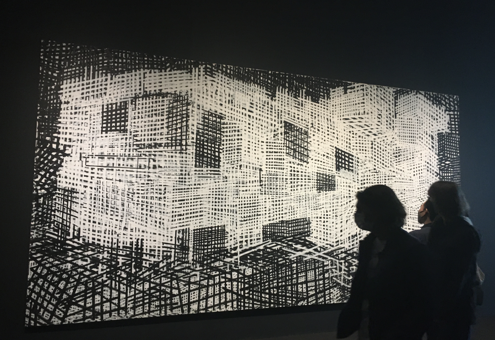
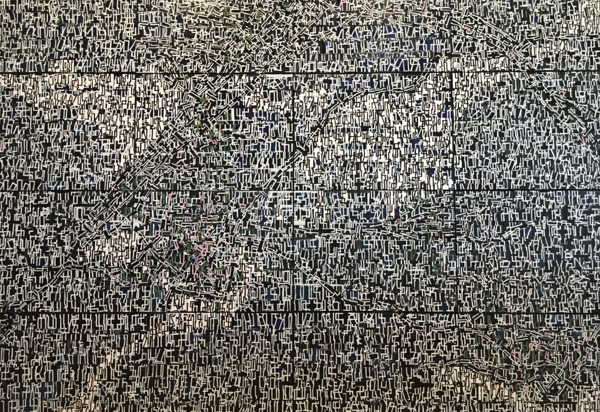

Quiet As Its Kept was the title of The 2022 Whitney Biennial. However, the exhibition primarily spanning across two floors of the building, was anything but silent. As I walked into the fifth floor of the Whitney, I was greeted with a sea of artworks and people. As if each composition was in constant motion in relation the individuals walking across it. Media of all kinds juxtaposed closely together to craft a space brought to life by the vibrancy of each artwork. This organized chaos was confusing at first, reflecting the curatorial statement of David Breslin and Adrienne Edwards: “Since the start of the pandemic, time has expanded, contracted, suspended, and blurred—often in dizzying succession.
I inevitably ran into smaller moments from the Biennial which rang true for me both in a visual and symbolic sense. To the left is a photo of a picture inside a tiny, handheld lightbox inspired device. The special image can only be seen if the handheld object is brought close to the viewers eyes.
In contrast to floor five, the sixth floor was dark, more organized, and almost claustrophobic in some places. Acting as a sieve for the viewers minds, filtering out the vast imagery created in the floor below, and forcing the viewer into a sort of a tunnel vision. One of the first pieces to catch my attention was this installation with a large LED screen which I assumed to be an under water, ocean world composition, however, it happened to be a visual depiction of the ever changing air quality around the room. Viewers could lie down on a sofa directly under the screen and look up to see a unique, ever changing composition.
Upon viewing this canvas, I thought it was an abstract representation of Manhattan, created strictly through the use of vertical, horizontal and diagonal black and white strokes. I felt that the composition created perspective, while not having any at the same time.
In conclusion, The Biennial was an exciting, abstract journey, through which I came away with my own perspectives, which were far different from those who I went with. I believe this kind of difference in opinion goes to show the versatility of art itself as well as the versatility in its impact on our minds. Even though the Biennial was rooted in concepts like American History and the Pandemic, what stood out to me was the freedom I experienced while absorbing the artworks, both through the expression of the artists as well as the presentation of the curators.